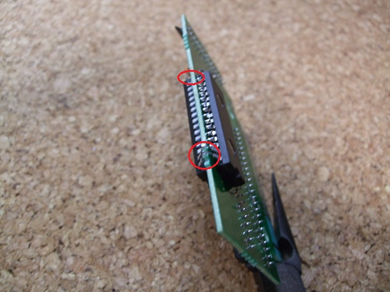

７．SRAMの取り付け
いよいよはんだ付けです。結構楽しいです。
628512の3〜30ピンが、1Mbit ROMのあった場所の1〜28ピンに収まるようにとりつけます。
実際に基板の穴に入れてはんだ付けするのは、ここでは3〜15、17〜29と32ピンだけです。22ピンは表側のSRAMのみはんだ付けし、裏側の628512とはつなげないように注意して下さい。
1, 2, 16ピンのハンダ付けはこの後の配線をつなげる時に行いますので、ここでは基板の外側で
ピン同士がくっつけられるようにしておくだけです。

 次へ
次へ